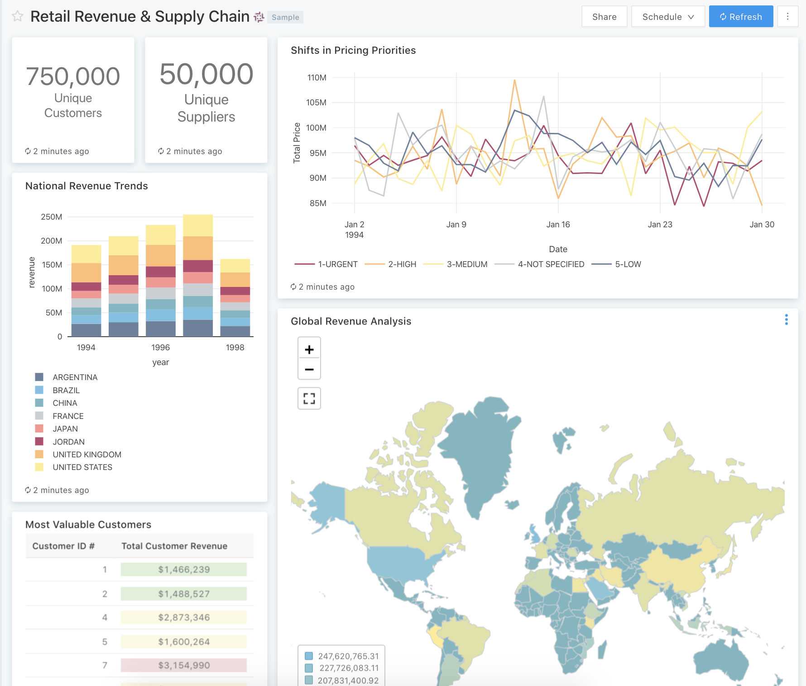
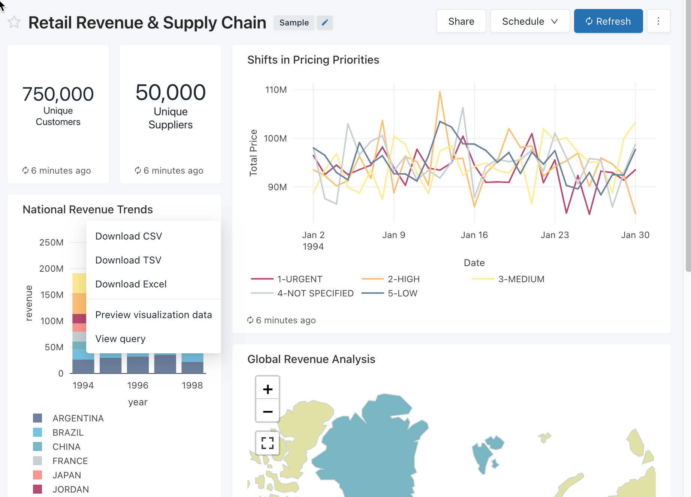
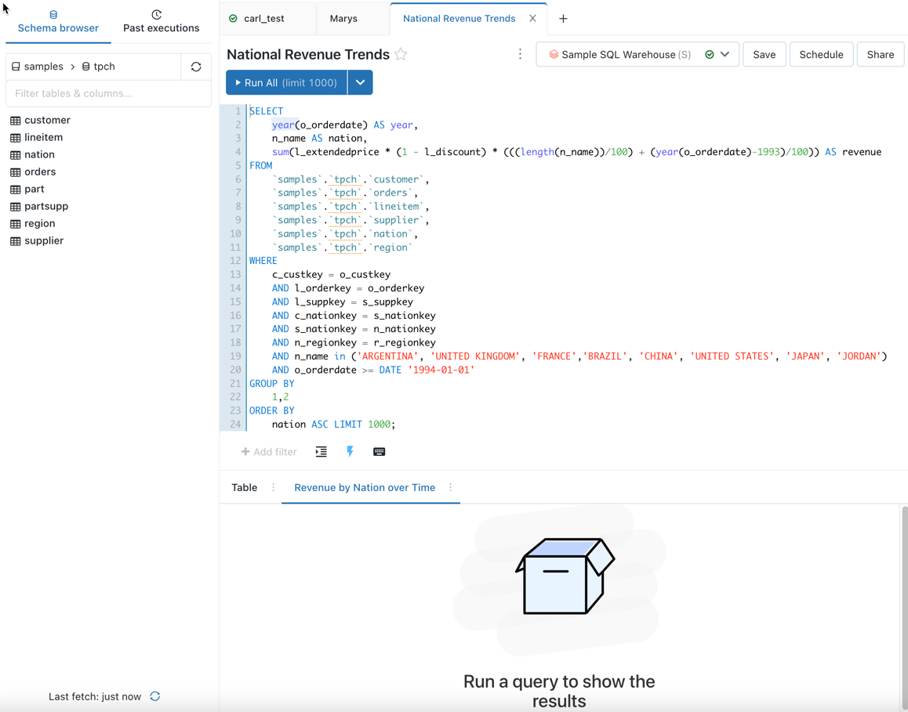
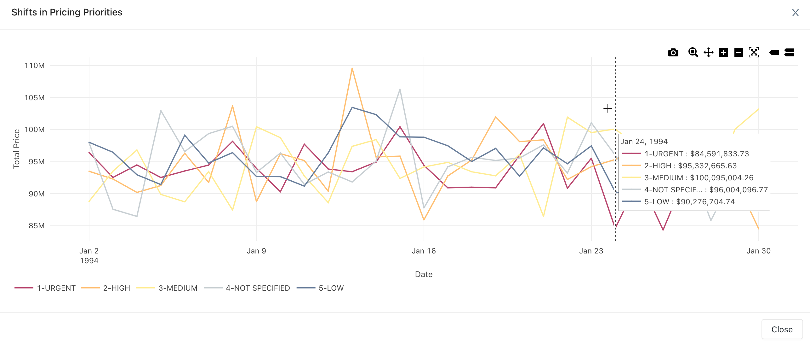

Tutorial: Use sample dashboards in Databricks SQL
This tutorial shows you how to import and use sample dashboards from the Databricks SQL Dashboard Samples Gallery. These dashboards illustrate some of the rich visualizations that Databricks SQL provides for gaining insights from your data. No setup is required. These dashboards use data that is already available to your workspace and rely on a compute resource (called a SQL warehouse) that is already configured. You don’t need to be an administrator to get started.
Requirements
The user who performs these steps must have the Databricks SQL access entitlement.
All users in new workspaces have this entitlement. To grant a user this entitlement, a workspace admin can go to the admin settings page and grant the Databricks SQL access entitlement to a user.
Import a dashboard
In the sidebar, click Dashboards
If your workspace has any saved dashboards, they are listed.
Click on View samples gallery.
Note
You can also navigate to the Dashboard Samples Gallery by appending
/sql/dashboards/samples/to your workspace URL.In the Retail Revenue & Supply Chain tile, click Import. The dashboard is imported into your workspace, and you are the owner.
The imported dashboard appears, and its visualizations are refreshed.

You can import a sample dashboard multiple times, and multiple users can each import it. You can also import the NYC Taxi Trip Analysis dashboard.
Explore a visualization’s query
Each visualization in a dashboard is the result of a query. In the imported dashboard, hover over the National Revenue Trends visualization, then click the context menu. Click View Query.
The SQL editor appears with the visualization’s query displayed.
The sample dashboards use data in the
SAMPLEScatalog, which is separate from data within your workspace. TheSAMPLEScatalog is available to every workspace, but is read-only.At the bottom of the query, change
LIMIT 1000toLIMIT 500to return only 500 records. Click Run All to run the modified query, then click Save to save the query in the dashboard.Note
When you modify the imported dashboard, the original dashboard in the Dashboard Samples Gallery is not modified. To start over, you can re-import the dashboard.
Click the browser’s Back button to go back to the dashboard.
Interact with a visualization
Hover over the Shifts in Pricing Priorities visualization. At the bottom, click the at the right to expand the visualization.
Use the buttons at the top right of the visualization to explore the data. You can download, zoom, pan, or autoscale the visualization.
Click Close to go back to the dashboard.
Schedule automatic dashboard refreshes
You can schedule the dashboard to automatically refresh at an interval.
At the top of the page, click Schedule.
Click Add schedule.
Select an interval, such as Every 1 hour at 5 minutes past the hour.
Click More options to modify the default schedule name and to specify a SQL warehouse. A SQL warehouse is a compute resource that is specific to Databricks SQL. The SQL warehouse runs the dashboard’s queries and generates the visualizations when the dashboard is refreshed.
Workspace admin users can create, configure, and delete SQL warehouses.
Optionally, on the Subscribers tab, you can choose to send a dashboard snapshot to subscribers when it is refreshed.
Workspace admin users can create, configure, and delete notification destinations. The email addresses of workspace users are automatically added as notification destinations.
Click Create schedule.
The dashboard will be refreshed according to the schedule.
To delete an existing refresh schedule for a dashboard:
Click Schedule (1).
Click the kebab menu on the right.
Click Delete and then click Delete to confirm.